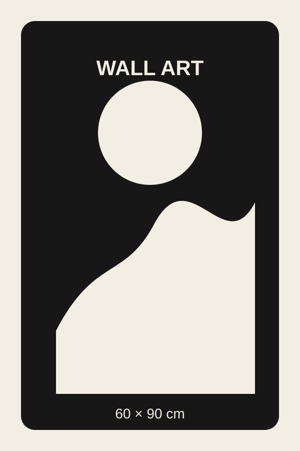
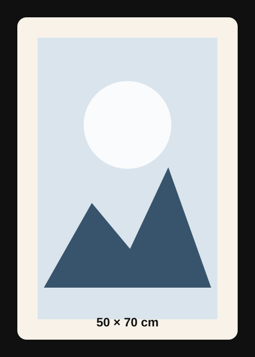

8th Wall Wall AR PoC
엔진 로딩 중...

60×90cm

50×70cm
다시 계산
테스트 목적
이 PoC는 8th Wall SLAM + absolute scale이 iOS/Android 웹에서 안정적으로 켜지는지 확인합니다.
8th Wall은 수직/수평 표면 분류 API를 명시적으로 제공하지 않으므로, 여기서는 벽 후보를 자동 추정하고 결과를 화면에 표시합니다.